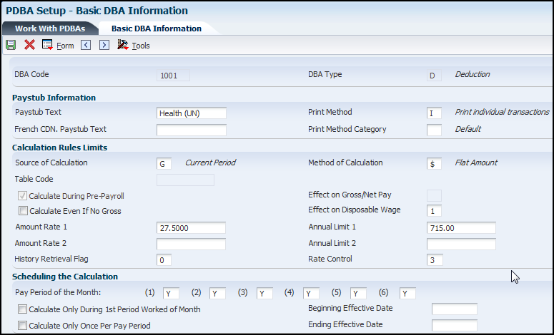
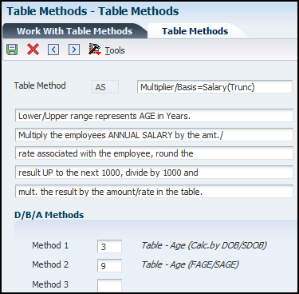
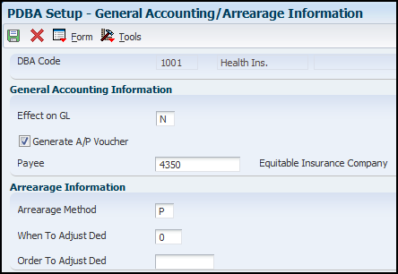
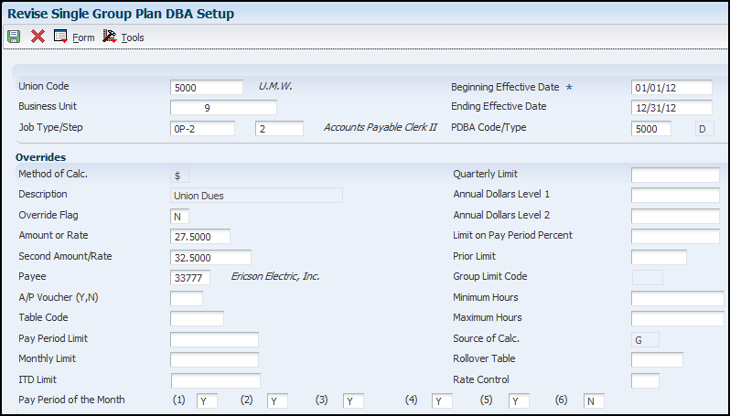
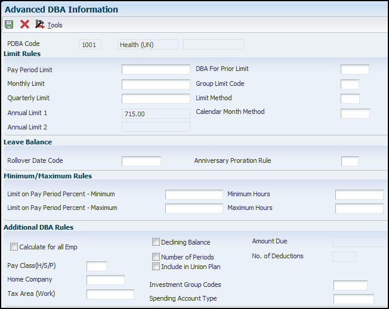

PDBAs (Pay Types, Deductions, Benefits, and Accruals) are set up to automate the process of adding and/or subtracting money from an employee's paycheck, calculating employee benefits, and tracking accruals when you run a payroll cycle. This document discusses the process of setting up a PDBA.
Pay Types:
You set up pay types to categorize various employee earnings to direct labor to different accounts in the general ledger. You can define up to 999 different pay types, using the range of numbers 001 to 999. For example, most companies need to set up different pay types for holiday, sick, and vacation or personal leave pay.
Setting up pay types also allows you to:
Define how different pay types are used when you compute employee pay.
Assign automatic pay methods for autopay employees.
Enable leave tracking.
Define a pay type to be tax exempt.
Define information to be printed on 1099 and W-2 forms for the associated pay type for U.S. payroll.
Define whether hours and dollar amounts should be passed to the general ledger.
Define how the system retrieves employee pay, deduction, benefit, and accrual (PDBA) history for each pay type.
You can also attach a media object to a pay type for explanatory notes or other information. If you attach a text media object to the pay type, the first two lines of text that you enter appear on reports that include the pay type description. When you set up a basic pay type, you define the minimum amount of information that the system needs to perform the calculation.
Payroll DBAs (Deductions, Benefits, and Accruals)
DBAs are typically setup only if you are using the JD Edwards E1 Payroll system. You might set up DBAs without the JD Edwards EnterpriseOne Payroll system if you have a customized interface with a payroll service bureau. You set up deductions to automate the process of subtracting money from an employee's paycheck when you run a payroll cycle. Deductions represent monetary amounts, other than taxes, withheld from an employee's earnings. The system can use different methods to calculate deductions. These methods include:
Flat monetary amounts
Percentages of gross pay
Calculation tables with criteria that vary from employee to employee
You can override at the employee level DBAs that are calculated based on flat monetary amounts and percentages.
Scope
This document is intended for E1 users who are setting up the Human Resources and Payroll modules for use by their organization.
Details
Setting Up Pay Types
From the Work with PDBAs application (P059116), select Pay type options, and click Add. On the Pay Types Revision form complete essential information.
Pay Type - Enter a code that identifies the type of pay. Pay types are numbered from 1 to 999.
Paystub Text - Enter the text that you want the system to print on the employee's paystub. If you are using the Time and Labor system, the system does not create payments. However, this field is required to complete the form. Generally, you enter a description of the pay type.
Print Method- A code that identifies whether the PDBA is to be printed on the paystub or whether it is to be printed on a payment that is separate from other PDBAs. Values for pay types and payroll taxes include:
Y: Print on paystub (default).
S: Print separate payment (one item per payment).
C: Print separate payment (C types combined).
N: Do not print on paystub.
The separate payment feature is only available for any pay type and for benefits entered as One Time Override. This feature is not available for any payroll taxes being withheld from the employee's payment.
French CDN. Paystub Text - The text that you want the system to print on the Canadian employee's paystub.
Pay Type Category - Enter a code from UDC 07/PC that specifies the pay type categories you want to use for regular pay, to generate overtime, and for reporting purposes on the Certified Payroll Register (U.S. only).
Pay Source - Enter a code from UDC 07/PB that defines the value upon which the system bases the employee's pay. H (hours worked) is the default value. Other values exist for tip and piecework processing, and for Canadian lump-sum amounts, irregular commissions, and bonuses. Use E (estimated pay) for an advance pay interim check. The system automatically deletes this type of timecard when you create interim payments so that you can enter the actual time when it is known. If you are setting up pay types for piece rate processing, you must enter B in the Pay Source field.
Pay Type Multiplier - Enter a factor by which the base hourly rate is multiplied to obtain the actual payment hourly rate. For example, you could enter 1.5 to designate time-and-one-half for overtime pay. Zero is not a valid multiplier. The default value is 1.00.
Shift Differential - Enter an additional rate, expressed in dollars or percent, added to an employee's hourly rate, depending on the shift worked. This rate can be applied in one of two ways as defined by the Shift Differential Calculation Sequence (data item CMTH). Enter a monetary amount in this field. The system does not calculate percentage amounts for shift differentials that you enter at the pay type level.
Shift Differential Method - Enter a code that specifies how the system calculates shift differential information. Values are:
1: Applies the pay type multiplier to the shift differential: Gross = (rate + shift differential) × (multiplier) × hours.
2: Applies the pay type multiplier only to the hourly rate and does not include the shift differential: Gross = (rate × multiplier) + (shift differential) × hours.
Blank: The system follows the shift differential method that is associated with the pay type from the Payroll Transaction Constants table (F059116).
The multiplier is the pay rate multiplier from the Payroll Transaction Constants table. When the pay rate is derived from the Union Rate table, the multiplier is assumed to be 1. In this case, all methods produce the same result.
Auto Pay Methods- Enter a code that determines how the system treats this pay type when computing automatically generated pay (typically for salaried employees). It also identifies supplemental pay. This code also determines how pay types are calculated based on the total time accounting (TTA) rules. Values are:
Y: The dollars with this pay type are part of the employee's base pay, for example, regular, holiday, sick, and vacation pay. For timecards with TTA rules, PDBAs with a value of Y are subject to inclusion in the TTA rules calculations. For example, TTA rule may be set up to exclude vacation time from being a part of regular pay. In this case, you must set vacation with a value not equal to Y.
N: The dollars with this pay type are in addition to the employee's base pay, for example, overtime pay and time off without pay.
S: The hours with this pay type are subtracted from the employee's base pay at standard rate and added back at the entered pay rate.
B: The dollars with this pay type are in addition to the employee's base pay and are treated as supplemental pay for taxation purposes, for example, bonuses, commissions, and payoffs. Canadian bonuses, irregular commissions, and lump sums use auto pay method B.
C: The hours or dollars entered using this pay type override all auto pay instructions.
Amount or Rate - Enter a value that specifies a percentage, a monetary amount, or an hourly rate, depending on where it is used. For a pay type, amounts entered in this field override the hourly rate.
Effect on Gross Pay - Enter a code that indicates whether the pay type is added to, subtracted from, or does not affect the employee's gross pay. Values are:
'+': Pay type will be added to the employee's gross pay.
'-': Pay type will be subtracted from the employee's gross pay.
Blank: Pay type will not have an effect on the employee's gross pay.
A pay type should not have a negative effect on gross pay. If you set up a pay type to have a negative effect on gross or net pay, gross-to-net errors appear on the Payroll Register. You should set up a deduction instead of a pay type if you need to have a negative effect on gross pay. When you set up a pay type with no effect on gross pay and a positive effect on net pay, do not create a separate check. Creating a separate check will cause a gross-to-net error.
Effect on Net Pay - Enter a code that indicates whether the pay type is added to, subtracted from, or does not affect the employee's net pay. Values are:
'+': Pay type will be added to the employee's net pay.
'-': Pay type will be subtracted from the employee's net pay.
Blank: Pay type will not have an effect on the employee's net pay.
A pay type should not have a negative effect on net pay. If you set up a pay type to have a negative effect on gross or net pay, gross-to-net errors appear on the Payroll Register. You should set up a deduction instead of a pay type if you need to have a negative effect on gross or net pay. When you set up a pay type with no effect on gross pay and a positive effect on net pay, do not create a separate check. Creating a separate check will cause a gross-to-net error.
Effect on GL - Enter a code that indicates whether the system writes journal entries from the JD Edwards EnterpriseOne Payroll system to the general ledger, and the method to use. Values are:
H: Write only hours to the general ledger. This code is valid for generating timecard journals. The code should not be used when journals are generated through the paycycle.
M: Do not write monetary amounts or hours to the general ledger. Do not calculate workers' compensation and general liability.
N: Write monetary amounts and hours to the general ledger.
Y: Write only monetary amounts to the general ledger.
W: Do not write monetary amounts or hours to the general ledger, but calculate workers' compensation and general liability. Workers' compensation and general liability amounts will be written to the general ledger.
Enable Leave Tracking- Enter a code that enables two types of leave tracking and verification. You can enable leave tracking for this pay type so that the system requires users to enter a leave type (UDC 07/LV) when entering leave time. You can also enable leave balance verification for this pay type so that when employees enter leave time, the system verifies that this pay type includes sufficient available balances. You need to use the second option in conjunction with two processing options on the Time Entry Master Business Function program (P050002A). If you set up time entry master business function so that the system verifies leave balances, then the system verifies only pay types that are identified at the pay type level. Values are:
0 or Blank: Do not enable leave tracking or leave balance verification.
Anniversary Proration Rule - Enter a code to specify how you want the system to handle leave time that is taken during the same pay period in which the employee's rollover date falls. If you leave this field blank, the system uses the timecard date worked to determine which anniversary year the leave was taken in. Enter 1 to allocate all time taken during the pay period to the next anniversary year, regardless of whether the time was taken before the anniversary date.
History Retrieval Flag - Enter an option that determines how the system retrieves PDBA history for an employee. This value works in conjunction with the Retrieve PDBA History System Flag on the Additional Options tab of the Company Options form for Company 00000. If that flag is set to look at each PDBA to determine how to retrieve PDBA history, you must enter a value in this field. Values are:
1: Retrieve PDBA historical amounts using the Corporate Tax ID associated with the Home Company on the employee's timecard. (Default)
2: Retrieve PDBA historical amounts across all Corporate Tax IDs for which the employee has history for the current year.
Allow for Future Entry- A user-defined code (05T/FE) that determines whether a pay type is selected as allowed for future entry. Values are:
Blank: Do not allow for future entry. This is the default value.
1: Allow for future entry.
Setting Up Tax Exemptions for Pay Types
From the Work with PDBAs application (P059116), select a Pay type record and then select Tax Exemptions options from the Row option menu.
Tax exemptions are setup for a pay type to define individual tax types that should be ignored during processing the applicable pay type.
Tax Type 01 through 15 - You can specify up to 15 tax types for which the respective payroll tax is not to be computed for a pay, deduction, or benefit code. If you enter * in the first element of this list, no taxes are computed.
Setting Up DBAs
DBAs are typically setup only if you are using the JD Edwards EnterpriseOne Payroll system. You might set up DBAs without the JD Edwards EnterpriseOne Payroll system if you have a customized interface with a payroll service bureau. You set up deductions to automate the process of subtracting money from an employee's paycheck when you run a payroll cycle. Deductions represent monetary amounts, other than taxes, withheld from an employee's earnings. The system can use different methods to calculate deductions. These methods include:
Flat monetary amounts
Percentages of gross pay
Calculation tables with criteria that vary from employee to employee
You can override at the employee level DBAs that are calculated based on flat monetary amounts and percentages.
Note: You can also override at the employee level a DBA that is based on a calculation table, although this action is not recommended. A DBA that is based on a calculation table has a table-method code attached to the DBA. This code tells the system how to calculate the DBA. The system does not recognize another method to calculate a DBA when a table-method code is attached to the DBA.
DBA calculations can be based on values, such as gross pay, hours, pieces, salary, month-to-date, or year-to-date earnings. You might set up:
A health insurance deduction with a flat monetary amount of 12.50 per pay period
A retirement savings deduction with an amount of 4 percent of gross pay per pay period
A life insurance premium based on the age of the employee based on a calculation table
Deductions can be setup at the DBA level, the group/union level as well as the employee level. DBAs can also be calculated as a one time override.
When a deduction is not collected from an employee's pay because the employee did not earn enough the deduction is said to be in "arrears". The system can manage DBA arrearages in these ways:
The first time an employee is paid during the pay period, the system attempts to collect DBA amounts. If a remainder still exists when the new pay period begins, that remaining amount is arreared into the new period for collection.
Each time an employee is paid during the pay period, the system attempts to collect any remaining DBA amounts. If a remainder still exists when the new pay period begins, that remaining amount is arreared into the pay cycle for collection.
Each time an employee is paid during the pay cycle, the system attempts to collect any remaining DBA amounts. If a remainder still exists when the new pay period begins, that remaining amount is not arreared into the new pay period for collection. This arrearage method is used for DBAs such as a deduction for a charitable contribution.
The system can also track DBA balances and limits across multiple companies (indicated by tax ID). If you have an employee that works for multiple companies during the course of a single pay period, the system tries to collect all appropriate DBAs plus any arrearages or balances each time the employee is paid. Arrearage collection across companies (by tax ID) is dependent upon company options for history retrieval. If you do not choose to retrieve history across tax IDs, then an arrearage balance is not collected across multiple tax IDs. The system adjusts negative pay in different ways, depending on the arrearage method that you use.
You set up DBAs to automate the process of subtracting money from an employee's paycheck, calculating employee benefits, and tracking accruals when you run a payroll cycle.
DBA Type
Use
Deductions
Deductions represent monetary amounts, other than taxes, withheld from an employee's earnings. You set up deductions to automate the process of subtracting monies when you run a payroll cycle.
Benefits
Benefits represent amounts that the company funds for additional employee compensation. A benefit can be cash or non-cash, either taxable or nontaxable. Benefit information can be passed to the general ledger to track burden. You set up benefit DBAs to automate the process of calculating benefits when you run a payroll cycle.
Accruals
Accruals represent a number of paid hours that the company funds as additional employee compensation. Usually, an employee accrues a certain number of hours per pay period. The system can carry over from year to year any accrued remaining balances, such as available vacation and sick time. Carrying over available vacation and sick time is known as rollover.
To determine whether a DBA should be set up as a benefit or an accrual, consider:
Benefits might or might not affect gross or net pay.
Accruals have no effect on an employee's gross or net pay.
DBA Information
When setting up essential DBA information, you can define the actual amount or rate to calculate or omit the actual amount or rate to calculate. If you omit the actual monetary amount or the percentage rate information during setup, you can enter it when you assign the DBA at the employee or timecard level. After setting up a DBA for which you have entered an amount or rate, you periodically might need to update that amount or rate. For example, when you set up a DBA for a medical deduction, you can enter the premium amount. A year later, when the medical plan carrier raises its premiums, you must update the premium amount for the DBA.
Example: DBA Calculations DBA calculations can be based on values, such as gross pay, hours, pieces, salary, month-to-date, or year-to-date earnings. You might set up:
A health insurance deduction with a flat monetary amount of 12.50 per pay period.
A retirement savings deduction with an amount of 4 percent of gross pay per pay period.
A vacation accrual based on a calculation table using these variables to calculate per pay period vacation accrual:
4 hours per pay period if employed 1 to 2 years.
6 hours per pay period if employed 3 to 5 years.
8 hours per pay period if employed 6 years or more.
Basis of Calculation for a DBA
The system must have a value on which to base the calculation for each DBA. This value is called the basis of calculation. You set up a basis of calculation for a DBA to define the base value that the system uses to calculate the DBA during payroll processing. A DBA can be based on pay types, on another DBA, or on a combination of both pay types and DBAs (PDBAs). To define the base value, you must list one or more PDBA codes for each DBA that you create. To determine which PDBA codes to assign to the DBAs that you set up, consider:
If you base a DBA on another DBA, both the From PDBA Type field and the Thru PDBA Type field must contain the same code (the code for the basis DBA). For example, you might have a DBA that is 1% of another DBA. In this case the first DBA would be included in the basis of calculation for the second DBA.
If you base a DBA on all pay types, enter code 1 in the From PDBA Type field and code 999 in the Thru PDBA Type field.
If you base the DBA on a selected group of pay types, include only those pay types in the From PDBA Type and Thru PDBA Type fields.
For example, if you base a DBA on all pay types except 801, enter 1 in the From PDBA Type field and 800 in the Thru PDBA Type field on the first line. On the second line, enter 802 in the From PDBA Type field and 999 in the Thru PDBA Type field. To easily review the basis of calculation for multiple DBAs, review the Basis of Calculation Hierarchy (P059036). This hierarchy graphically illustrates the reporting relationships between PDBAs, even those DBAs that are based on multiple DBAs. For example, a typical hierarchy for retirement savings plan DBAs shows:
The employer match DBA is based on the employee contribution DBA.
The employee contribution DBA is based on pay types 1 through 999.
Setting Up a DBA Based on Another DBA
You set up a DBA based on another DBA to use a value that has already been calculated (from the based-on DBA) to calculate the DBA that you are setting up. For example, you set up an employer match benefit for a retirement plan that is based on a retirement plan deduction that has already been set up to deduct a certain amount from an employee's pay. If DBAs are based on other DBAs, you must assign numbers to those transactions accordingly. The system calculates DBAs in numeric order, from low to high. For example, if your company matches an employee's contribution to a retirement plan based on payroll deductions, the DBA code for the employee's payroll deduction must be the lower number of the two so that the system calculates it before calculating the matching DBA.
PDBA Effective Dates
Many organizations need the flexibility to make salary adjustments or DBA rate changes effective during the middle of a pay cycle rather than waiting until the beginning of a new pay period to apply the adjusted rate. Effective-dated PDBA rate changes provide organizations with the flexibility to make PDBA rate changes during the pay period. Pay rates are always date effective. The effective date controls rate changes for DBAs, that the system recognizes and applies during payroll processing. Users will have the ability to instruct the system to prorate DBAs with the following choices:
Apply the rate or rule in effect at the beginning of the pay period.
Apply the rate or rule in effect at the end of the pay period.
Prorate the DBA to reflect the new rate as of the effective date.
The system executes rate changes during the pay cycle in accordance with the actual effective date. PDBA proration rules can be defined at the following levels:
DBA Setup
Employee DBA Instruction
Group Plan DBA Setup
For DBAs, the system performs calculations that use rates that are in effect during the current payroll cycle. The system does not consider rates or data that might have been in effect during previous payroll cycles. When you set up a DBA to prorate within a payroll cycle, the system calculates the DBA in one of these ways:
DBAs that include flat calculations such as dollars or accrued hours use this calculation method: Number of days in the pay period in which the instruction is valid divided by the total number of days in the pay period equals a proration factor. The system then multiplies the flat amount by the proration factor to produce the final DBA calculation.
All other DBAs use this calculation method: Only data that includes an effective date that falls within the effective date of the instruction or within the effective dates of the calculation range is included in the final DBA calculation.
When you enter changes into the system that affect pay rates, the system automatically marks timecards that are affected by the changes. When you run a payroll, these timecards are evaluated and paid based on the date-effective rate changes. Rate changes to these tables trigger the date-effective evaluation process:
F069106
F06106
F069116
Changes to these items could trigger a mid-cycle PDBA rate change:
Home Company (HMCO)
Home Business Unit (HMCU)
Union Code (UN)
Job Type (JBCD)
Job Step (JBST)
Pay Rate (PHRT)
Billing Rate (PBRT)
Piece Rate (PPRT)
Shift Rate (SHD)
Shift Code (SHFT)
Salary (SAL)
You specify the rate that the system uses to calculate a DBA by entering a value in the Date Effective Rate Control field (data item DEFR) of all applications that you use to create DBAs. Examples of these applications are:
PDBA Setup (P059116)
Employee DBA Instructions (P050181)
Group Plan DBA Setup (P059101)
Before you set up DBAs for your company, consider the functions that you want the DBA to perform:
Which method should the system use to calculate the DBA?
When will the system calculate the DBA?
What are the effective dates for the DBA?
Should the system pass the information to the general ledger?
Do you want to base the calculation for the DBA on another DBA or on a pay type?
Should the deduction be in arrears in a negative pay situation?
Should taxes be calculated for this DBA?
Do you want to set up limits for the DBA?
Is the DBA mandatory or voluntary?
Assigning DBA Codes
When you set up DBAs, you assign each DBA a numeric transaction code. Because the numeric transaction codes 001 through 999 are reserved for pay types, use the numeric transaction codes 1000 through 9999 to define up to 9000 DBAs. Grouping similar DBAs by function is the recommended approach. For example, you might group all long-term disability deductions and assign numbers within a range, leaving some numbers available for later additions, as follows: 1220: Long-term disability insurance coverage at 66 2/3 percent 1222: Long-term disability insurance coverage at 50 percent
Note: DBAs are not specific to one company. You can use DBAs across different companies.
Adding a Deduction
From the PDBA Setup - Work With PDBAs application, select a PDBA type (deduction) and click Add.

DBA Code - Enter a code that defines the type of DBA. Deductions and benefits are numbered from 1000 to 9999.
DBA Type- The system displays the type of payroll entry, based on the value you select on the Work With PDBAs form. Values are:
P: Pay type (earnings)
D: Deductions withheld
B: Benefit (both cash and non-cash)
A: Time accrual, such as sick and vacation time
Note: These values can be changed only by Oracle.
Paystub Text - Enter text that you want the system to print on the employee's paystub. If you are using the Time and Labor system, the system does not create payments. However, this field is required to complete the form. Generally, you enter a description of the PDBA.
French CDN. Paystub Text - Enter the French text that you want the system to print on a Canadian employee's paystub. If you are using the Time and Labor system, the system does not create payments. However, this field is required to complete the form. Generally, you enter a description of the PDBA.
Print Method - Enter a code that identifies whether the PDBA is to be printed on the paystub or whether it is to be printed on a payment that is separate from other PDBAs. Values for DBAs include:
Y: Print as total deductions (default).
S: Print separate payment (one item per payment).
C: Print separate payment (include detail).
N: Do not print on paystub.
I: Print individual DBA codes.
T: Print by DBA print group.
The separate payment feature is not available for any payroll taxes being withheld from the employee's payment.
**NOTE: DBA's that have any effect on gross or net pay must print on the Payroll Register to avoid 'Gross to Net' errors.
Print Method Category - Enter a code from user-defined codes (UDC) 06/PC that categorizes the PDBA. The category is listed on the paystub. You can have more than one PDBA for each category. For example, V, for overtime, might include time and a half and double time.
Source of Calculation- Enter a code from UDC 07/DB that specifies the basis of a DBA. When the system calculates the gross amount for disposable net wages, it does not use the basis of calculation. The gross amount includes all earnings that have a positive effect on the gross and net payment. For wage attachments, you must use one of these codes:
1 - 8: Garnishment, tax levy, wage assignment (child support and maintenance).
R: Loan, interest.
0: Fees.
Method of Calculation- Enter a user-defined code (system 07, type DM) that specifies the method that the system uses to perform certain calculations. For example, the system uses a method of calculation to calculate DBAs and workers' compensation insurance. The method of calculation values are hard-coded. If you use methods 0 through 6,8,9, or G, you must also enter a value in the Table Code field. For wage attachments, use one of these methods:
C: Wage assignment (child support and maintenance)
G: Garnishment
K: Loan
L: Tax levy
A: Fees
%: Interest
Table Code - Enter the table number that the system uses if the calculation requires table values.
Effect on Gross/Net Pay - Enter a code that specifies the effect a benefit has on gross and net income. Values are:
1: A non-cash benefit that is nontaxable. The benefit, which is a journal entry only, has no effect on gross or net income.
2: A cash benefit that is taxable. The system adds the benefit to gross and net income.
3: A non-cash benefit that is taxable. The system adds the benefit to the taxable gross income, but there is no effect on net income other than the tax that is withheld.
4: A cash benefit that is nontaxable. The benefit has no effect on gross income, and the system adds the benefit to net income as an adjustment to net pay. In addition, the system adds this type of benefit to gross wages on the payroll register so that gross - deductions = net.
Calculate Even If No Gross - Enter an option to calculate a DBA when an employee has no gross pay and no PDBA codes exist in the basis of calculation. When an employee has no gross pay, the system calculates the DBA when:
The Calculate Even If No Gross option is selected.
The source of calculation is G.
The method of calculation is $. The system then records the resulting amount in arrears and performs one of these functions:
Creates an overpayment for a deduction.
Calculates it as a benefit or an accrual.
Note: If the PDBA codes exist in the basis of calculation, the system attempts to calculate the DBA, regardless of this setting.
Effect on Disposable Wage - This code designates whether a DBA is subtracted from gross to determine an employee's disposable wages. Values are:
1: Voluntary - These deductions are subtracted from gross to determine disposable wages for deductions with a Source of Calculation of 1, 5, and 7.
2: Mandatory - These deductions are subtracted from gross to determine disposable wages for deductions with a Source of Calculation of 1, 2, 4,5, 6, and 7.
Amount Rate 1 - Enter a value that specifies a percentage, a monetary amount, or an hourly rate, depending on where it is used. For a DBA, the meaning of this value depends on the method of calculation. The method determines whether the deduction is a flat monetary amount, a percentage, or a multiplication rate. Table method DBAs, depending on which table method they use, can either use this amount in the calculation or ignore it. If exceptions to the table calculation exist, you can override the table code in the detail area, set up a flat monetary DBA amount, or override the amount with a one-time override for a timecard. Values are:
1: Amount does not override the hourly rate. For a pay type, amounts entered in this field do not override the hourly rate.
2: Amount overrides the hourly rate. For a pay type, amounts entered in this field override the hourly rate.
Annual Limit 1 - Enter the maximum amount that can be withheld or accrued in a year for a deduction or a benefit. This amount is expressed in dollars. This amount refers to the gross pay/amount field. In the JD Edwards EnterpriseOne Payroll system, this field can represent either an initial annual limitation or a final limitation in a year. For example:
If the Annual (Level 1) field is not blank, this amount represents the first level of the yearly limitation. The value in Annual (Level 2) represents the final limitation.
If an annual limit is specified on a DBA calculation table, the annual limit from the table takes precedence over annual limits defined at the master DBA or employee levels.
Amount Rate 2 - Enter the second amount or rate associated with a DBA. Because many DBA types require multiple tiers, two levels of Amount (Rate) exist. The system uses the first level, Amount (Rate) 1, until the annual limit is reached. Then the second level, Amount (Rate) 2, begins the next time the employee is paid. Amount (Rate) 2 continues until the second annual limit is reached. This field works in conjunction with the annual limit fields. The rate you enter in this field supersedes any other table rate for an employee, except for one-time overrides during time entry.
Annual Limit 2 - Enter the maximum amount that can be withheld or accrued in a year for a deduction or a benefit. This amount is expressed in dollars. This amount refers to the gross pay/amount field.
Note: This field represents the second level annual limitation. It is used when there is an initial limitation and a corresponding rate, which is followed up by a new rate and a final limitation. This field cannot be used independently. The Annual (Level 1) field must always contain a value.
History Retrieval Flag - Enter an option that determines how the system retrieves PDBA history for an employee. This value works in conjunction with the Retrieve PDBA History System Flag on the Additional Options tab of the Company Options form for Company 0 (zero). If that option is set to look at each PDBA to determine how to retrieve PDBA history, you must enter a value in this field. Values are:
1: Retrieve PDBA historical amounts using the Corporate Tax ID associated with the Home Company on the employee's timecard. (Default)
2: Retrieve PDBA historical amounts across all Corporate Tax IDs for which the employee has history for the current year.
Rate Control (PDBA Effective Dates)- Enter a value from UDC 07/RN that defines the date that is effective for the PDBA. The system uses this field to control the rate that it uses to calculate a DBA when multiple rates are valid within the pay cycle. During payroll and interim processes, this value determines whether the system uses the ending rate, beginning rate, or prorates all rates it finds within a pay cycle period. Values are:
1: Use the rate that is valid at the end of the pay period.
2: Use the rate that is valid at the beginning of the pay period.
3: Prorate the DBA calculation using all rates.
Note: When you set this value to 3, (prorate the DBA calculation) two results are possible based on the type of DBA. DBAs that include flat calculations (dollars or accrued hours) use the number of days in the pay period in which the instruction is valid, divided by the total number of days in the pay period, to determine a proration factor. The system then multiplies the flat amount by the proration factor to produce the final DBA calculation. The system performs this calculation for each valid DBA instruction during a pay cycle period. All other calculations use this definition of proration: The DBA uses only those items that include an effective date that falls within the effective date of the instruction or within the effective dates of the calculation range as a basis of calculation.
Pay Period of the Month - Enter a code designating the pay period in which the system calculates the DBA. Values are:
Y: Take the DBA during the current period.
N: Do not take the DBA during the current period.
*: Take the DBA only during the first pay period of each month that the employee works based on the ending date of this month's pay period.
Blank: Continue to look for a code at the lower level. The system searches for DBA rules first at the employee level, then at the group level, and finally at the DBA master level. If the field is blank at all levels, the system does not calculate the DBA in that period.
M: Apply only to benefits based on gross hours or dollars. An M in the fifth field tells the system to calculate the benefit only during the special timecard post. An M implies a Yes for a weekly withholding frequency.
Note: Some organizations may have the need to process a sixth, or special, payroll during a month.
Calculate Only During 1st Period Worked of Month - Enter a code that indicates whether the DBA should calculate only during the first pay period that an employee works each month.
Calculate Only Once Per Pay Period - Enter a code that indicates whether the DBA should be calculated only once in a pay period if the employee receives more than one check.
Setting Up the Basis of Calculation
From the PDBA Setup - Work With PDBAs, select a deduction code and then select Basis of Calc from the row menu.
From PDBA - Enter the number and description of the PDBA that you want the system to use to calculate the corresponding PDBA. This number is the beginning number in the range that is the basis of the calculation.
Thru PDBA - Enter the number and description of the PDBA that you want the system to use to calculate the corresponding PDBA. This number is the ending number in the range that is the basis of the calculation.
Note: To include all pay types, enter 1 in the From PDBA field and 999 in the Thru PDBA field.
Setting Up Table Method DBAs
You set up table method DBAs when the calculated amount of the DBA is based on information that varies from employee to employee. Table method DBAs can be simple or complex, depending on the required outcome of the DBA calculation. Table method DBAs are set up using calculation tables that contain the variable factors upon which the amount or rate of the DBA should calculate. DBAs may use calculation tables if the amount or rate of the DBA should be based on variable factors such as salary, age, or length of service. For example, life insurance premium rates are typically dependent upon an employee's age and elected coverage amount. To accommodate this type of calculation, you would create a table method DBA.
When you create table method DBAs, you use a combination of calculation methods, table methods, and calculation tables.
Methods of Calculation - The Method of Calculation field is defined on the DBA setup form. The method of calculation tells the system how to calculate the amount or rate of the DBA. All DBAs use methods of calculation. Simple DBAs calculate amounts or rates using flat dollar or percentage calculation methods, while more complex DBAs are based on tables that contain variable information. These DBAs are table method DBAs. The method of calculation indicates what the ranges in the calculation table represent, such as age ranges or salary ranges. The methods of calculation are attached to these numeric codes defined in UDC 06/DM:
0: Withholding periods.
1: Salary range.
2: Date range.
3: Age range (calculated by date of birth or spouse date of birth).
4: Hours worked.
5: Pieces produced.
6: Variable months.
7: Workers compensation insurance.
8: Gross pay.
9: Age (calculated as of the date that you enter in the Employee Age field or Spouse Age field on the Personal form).
For example, to base a DBA on employee age, use method of calculation 3 or 9.
Table Methods - Table methods contain the programming rules that tell the system how to calculate table method DBAs using the information that you define in the calculation table. Before you set up calculation tables, you should determine which table method to use to accurately calculate the amount or rate of the DBA. Five general, arbitrary categories of DBA table methods are available. Methods are distinguishable by which DBA methods they are based. This table lists the categories and available calculations:
Category
Available Calculations
Salary Amounts: Pay Period Monthly Annual Life Insurance 2nd Life Insurance Spouse Life Insurance
For the salary figure, you can perform one of these calculations:
Table amount × Employee rate
Salary × Employee rate × Table amount
Table amount = actual DBA amount
Hours worked × Table amount
Gross earnings × Table amount
Salary × Employee rate. Result rounded down × Table amount
Salary × Employee rate. Result rounded up × Table amount
Salary × Table amount × Excess rate
Employee Age:
Based on the employee age, you can perform one of these calculations:
Salary × Employee rate × Table amount
Salary × Employee rate. Result rounded down × Table amount
Salary × Employee rate. Result rounded up × Table amount
Salary × Employee rate. Result rounded down ÷ 1000
Salary × Employee rate. Result rounded up ÷ 1000
Salary × Table amount × Excess rate
Dates: Leave of Absence Original Hire Participation Start
For each date, you can perform one of these calculations:
Table amount × Hours worked (calculates hours only)
Table amount × Hours worked
Table amount = actual DBA amount
Table amount × Gross earnings
Annual salary × Table amount × Excess rate
Pay-period salary × Table amount × Excess rate
Monthly salary × Table amount × Excess rate
Life insurance salary × Table amount × Excess rate
2nd life insurance salary × Table amount × Excess rate
Amounts: Hours Gross Amount Flat Dollar
You can perform various calculations against an employee pay rate, hours, and gross wages. These calculations include:
Average hourly rate.
Range from the detail area of the table.
Miscellaneous: Pay-Period Number Variable Months Excess Life Insurance
You can use various tables, depending on:
Pay-period number for the month.
Number of months of history to use as a basis.
Group term life insurance premiums.
Table Methods
Before setting up a calculation table, you should review table method information to determine which table method to use in order to appropriately calculate the amount or rate of the DBA. Reviewing table methods allows you to see a description of how the table method calculates DBA amounts or rates as well as which methods of calculation are valid for use in conjunction with the table method. Methods of calculation tell you what types of information can be defined in the calculation table.
Most of the table methods that you need are included with the system. Occasionally, you might need a table method that is not included with the system. In this case, you can customize the system by adding a new table method or by copying an existing method and then making the necessary modifications. Typically, you create custom table methods using Named Event Rules (NERs). You can select existing NERs or you can create new NERs through the Business Function Design Aid tool, which you can access from the Object Management Workbench (OMW).
To be used in custom table methods, new NERs must use the DN0700003 (DBA Calculation Generic Functions) data structure. Programmers or consultants typically create custom table methods. We recommend that you contact your system administrator if you identify the need to add a custom table method.
Caution: Do not delete or modify existing table methods. If you need to modify an existing table method, Oracle recommends that you make a copy of the table method and modify the copy.
Reviewing/Adding Table Method Descriptions and Methods of Calculation
Access the Table Methods form (P059027), click Add.

Table Method - Review the table method code and the name associated with the code.
Description 01 - Review the table method description. The description explains the calculation and describes the information that should be entered in the calculation table.
DBA Method - Review the valid calculation methods that can be used in conjunction with the table method. The value that you enter in the Method of Calculation field on the DBA setup form should match one of these values.
Note: You would typically access the Work with Pre-Payroll DBA Calculation Control form only if you needed to understand the programming associated with a Table Method or if you wanted to add new table methods. You typically use the Table Methods form to review the descriptions of existing table methods when you are determining which table method to use for a calculation table.
For more details regarding table methods see Anatomy of a DBA Table Method (F07901)DBA Table Method (F07901).
Calculation Tables
When you enter a numeric value in the Method of Calculation field on the DBA Setup form, the system recognizes the DBA as a table method DBA, and requires you to attach a calculation table to it. Before you can attach a calculation table to a table method DBA, you must first define the calculation table. Calculation tables contain the parameters such as age or length-of-service ranges that the system needs to calculate the amount or rate of the DBA. You indicate which table method the system should use when you create calculation tables. It is important to select a table method that is compatible with the method of calculation you intend to use on the DBA Setup form. Two types of calculation tables exist. When you define a new calculation table, you indicate in the Table Type field if the table will be used to calculate DBA amounts or if the table will be used to determine limits for rolling over sick and vacation accruals. Most table method DBAs are used to calculate DBA amounts or rates, and most use a table type of D.
Setting Up Calculation Tables
After you have reviewed the available table methods and determined which table method to use, you set up calculation table information to define the parameters that the system will use to calculate the amount or rate of the DBA. When you create calculation tables for DBA calculations, you define valid ranges and amounts that are a function of certain table method codes. The description of the table method code that you select outlines what type of information can be entered in the calculation table and how the system will use the information to calculate the amount or rate of the DBA.
From the Calculation Tables - Work With Calculation Tables (P059021), click Add.
Table Code - Enter the code for the calculation table. You may want to assign the calculation table the same code as the DBA to which it corresponds unless you plan to use the calculation table for multiple DBAs.
Table Type - Enter a code that defines the purpose of the table. Values are:
D: The system uses the table to calculate DBAs.
R: The system uses the table to determine limits for rolling over sick and vacation accruals.
Table Method - Enter a code that specifies the method in which the DBA is calculated.
Accrue Days - Select this option if you want the system to accrue hours based on a number of days. If you select this option, the system calculates the number of hours to accrue by multiplying the value in the Amt./Rate field by the standard-hours-per-day that is set up for the employee. In addition, the system also treats the values in these fields as days, rather than hours:
Additional Rate
Amt./Rate 2
Limit Amount
Excess Rate
Lower Limit - Enter the lower or minimum amount to be compared.
Upper Limit - Enter the upper or maximum amount to be compared.
Amt./Rate - Enter the amount or rate to be used in the calculation of a DBA. The system uses this field when the method of calculation specifies a 1, 2, 3, 4, 5, or 6, and therefore a specific basis table is retrieved for the ultimate calculation of the transaction.
Excess Rate - A rate that the system applies to the amounts that exceed the table defined amount.
Rollover Table - A code that specifies the method under which the DBA is to be calculated. This calculation table serves as the secondary calculation table for the system. You must enter a code in this field if you enter a code in the secondary method field. This is the identification number of the rollover table that will be used to limit the amount that can be rolled over for an accrual. The limit is based on an employee's months of service. For example, the table can be setup so an employee with 0 thru 12 months can roll over up to 40 hours at year end and an employee with 13 thru 999 can roll over up to 80 hours.
Description - A user defined name or remark.
Limit Amt. - Enter the maximum amount that can be withheld or accrued in a year for a deduction, benefit, or accrual. This amount is expressed in dollars for a deduction or benefit and in hours for an accrual. For the JD Edwards EnterpriseOne Payroll system, this field can represent either an initial annual limitation or a final limitation in a year. If the Annual (Level 1) field is not blank, this amount represents the first level of the yearly limitation. The value in Annual (Level 2) represents the final limitation. If an annual limit is specified on a DBA calculation table, the annual limit from the table takes precedence over annual limits defined at the master DBA or employee levels.
ITD Limit - The maximum amount of dollars or hours that an accrual can have at any one time. For example, your company might have a vacation policy that allows an employee to rollover 40 hours each year, but the accrued balance cannot exceed a total of 300 hours at any one time. The system calculates both the payroll cycle and year-end rollover up to the limit, taking into account the amounts that have been used.
Amt./Rate 2 - Enter the amount or rate that the system uses in the calculation of an accrual, benefit or deduction. The system uses this field when the method of calculation specifies a 1, 2, 3, 4, 5, or 6, and therefore a specific basis table is being retrieved for the ultimate calculation of the transaction.
Additional Rate - Enter the rate for the system to use in the calculation of the transaction, using the table setup. The amount specified here overrides any other rate that might be retrieved through the standard hierarchy for accrual, benefit, or deduction calculation.
Weeks of Service (not shown in screenshot) - Select this option if you want to base employee service requirements on the number of weeks, rather than the number of months of service. If you select this option, the values in the Upper Limit and Lower Limit fields represent weeks, not months. This field appears only when the value in the Table Method field begins with O, P, L or S.
Attaching Calculation Tables to DBAs
After you set up your calculation tables, attach a calculation table to the DBA by entering the table code on DBA Setup. Calculation tables are attached to table method DBAs when you set up the basic DBA information. Therefore, you should create the necessary calculation table before you add the table method DBA.
Method of Calculation - Enter a numeric value to indicate that this is a table method DBA. The method values are hard-coded. If you use methods 0 through 6, 8, 9, or G, you must also enter a value in the Table Code field. Before selecting a method of calculation for a table method DBA, you should review the valid calculation methods that can be used in conjunction with the table method associated with the calculation table. The value that you enter in this field should match one of these values.
Table Code - Enter the table number that the system uses if the calculation requires table values.
Note: Although you can attach the same calculation table to more than one DBA, if you are attaching only one calculation table to one DBA, we recommend that you make the table code the same as the DBA code for convenience.
Setting Up General Accounting and Arrearage Information
General Accounting/Arrearage Information determines what information will be passed from payroll to general accounting. It also determines how arrearages for DBAs that are not collected will be handled.
From the Work with PDBAs form select a record and click Select. From the PDBA Setup - Work With PDBAs application, select a (deduction) record, and the select GA/Arrearage Info. from the Form menu.

Effect on GL- Enter a code indicating whether you want journal entries passed from payroll to the general ledger and the method you want to use. Valid codes are:
N: Pass dollars only to the general ledger.
M: Do not pass dollars or hours to the general ledger. This code enables an accrual to be tracked in employee payroll history and the dollars to be omitted from the general ledger.
Generate A/P Voucher - Enter a code used to determine whether the system should generate a voucher for the DBA, tax, or wage attachment during the final update phase of the payroll processing cycle. Valid codes are:
N: No
Y: Yes
Select this option if you are integrating the JD Edwards EnterpriseOne Payroll system with the Accounts Payable system and you need to activate vouchering for the DBA.
Payee - Enter the address book number for the supplier who receives the final payment. In benefits administration, this is the address book number of the company that issues the plan and receives premium payments for it. For wage attachments, the payee is the address book number of the agency, company, individual, or court that is to receive the payment of the check. For fund allocations, this is the address book number of the investment program. When you specify a payee, you should also select Generate A/P Voucher. If Generate A/P Voucher is not selected, the system might create an invalid journal entry.
Arrearage Method - Enter a code indicating how to adjust deductions when the employee is in a negative pay situation. Values are:
P: Do a partial or full deduction as needed. This is the default.
F: Do a full reduction or none at all.
N: Do not reduce.
Q: Same as code P. In addition, place the amount in arrears, but do not apply the limits when collecting the arrearage. Write the arrearage balance to history.
R: Same as code P. In addition, place the amount in arrears and apply the limits when collecting the arrearage. Write the arrearage balance to history.
G: Same as code F. In addition, place the amount in arrears, but do not apply the limits when collecting the arrearage. Write the arrearage balance to history.
H: Same as code F. In addition, place the amount in arrears and apply the limits when collecting the arrearage. Write the arrearage balance to history.
S: Same as code P. In addition, place the amount in arrears for the current pay period only but do not apply the limits when collecting the arrearage. Do not write the arrearage balance to history.
T: Same as code P. In addition, place the amount in arrears for the current pay period only and apply the limits when collecting the arrearage. Do not write arrearage balance to history.
I: Same as code F. In addition, place the amount in arrears for the current pay period only, but do not apply the limits when collecting the arrearage. Do not write arrearage balance to history.
J: Same as code F. In addition, place the amount in arrears for the current pay period only and apply the limits when collecting the arrearage. Do not write arrearage balance to history.
When To Adjust Ded - Enter a code that specifies when the system adjusts, or backs an amount out of, deductions. Values are:
0: Adjust deductions marked with 0 before payroll taxes.
1: Adjust deductions marked with 0, and then adjust those marked with 1 before payroll taxes.
2: Adjust payroll taxes before the deductions marked with 2. (This value is for future use.)
Order To Adjust Ded - If an employee's gross pay does not cover deductions, a code in this field tells the system in what order it should satisfy deductions. Valid codes are 0001 through 9999. The system starts with the highest code. For example, 9999 is deducted before 0001.
Group Plan DBAs
Group plan DBAs are set up to apply deductions, benefits, and accruals to a group of employees. You can also copy a single and/or multiple DBA plans and assign each DBA plan to a single employee. Beginning with Release 9.1 Update, in addition to assigning DBAs to a group of employees and/or a single employee, you can override information about the DBAs for a group of employees at group level, and also for single employee.
You identify each group plan by DBA code and union code. You can further define group plans with additional qualifying criteria, such as:
Criteria
Discription
Business Unit
The plan applies only for work performed at a particular business unit or job location.
Job Type
The plan applies only to employees working in a certain job type.
Job Step
The plan applies only to employees in a certain job step within a job type.
Date Range
The plan applies if the pay period dates fall within the date range that you define. For example, you could use this criterion to establish plans with built-in rate increases that you base on effective dates.
Setting Processing Options for Group Plan DBA Setup (P059101)
Default Tab - Use this processing option to specify whether you want the system to access the Revise Single Group Plan DBA Setup form or the Revision Multiple Group Plan DBA Setup form. The default value (1) is the multiple revisions form. 1. Choose Revisions Form - Specify whether the system should display the Single Revisions form or the Multiple Revisions form. Values are:
Blank: Single Revisions form
1: Multiple Revisions form
Setting Up Group Plan DBAs
Access the Revise Single Group Plan DBA Setup form or the Revision Multiple Group Plan DBA Setup form (P059101)
In this document when two field names are listed for a field, the first name is the name of the field on the Revise Single Group Plan DBA Setup form and the second name is the name of the field on the Revision Multiple Group Plan DBA Setup form. If only one field name is listed, the same name is used on both forms.

Union Code - A user defined code (06/UN) that represents the union or plan in which the employee or group of employees work or participate.
Beginning Effective Date - The date that an employee may begin participating in the company's benefit plans or may be included in payroll processing. The start date must be less than or equal to the timecard date. To start a DBA at the beginning of a pay cycle, make the start date equal to the first day of the pay cycle. For example, if the pay cycle runs from 10/01 to 10/15, start the DBA on 10/01.
Business Unit - An alphanumeric code that identifies a separate entity within a business for which you want to track costs. For example, a business unit might be a warehouse location, job, project, work center, branch, or plant. You can assign a business unit to a document, entity, or person for purposes of responsibility reporting. For example, the system provides reports of open accounts payable and accounts receivable by business unit to track equipment by responsible department. Business unit security might prevent you from viewing information about business units for which you have no authority.
Ending Effective Date - The date when an employee should no longer be included in a payroll cycle or the date when an employee stops participating in the company's benefit plans. You can use this date for terminated employees, seasonal employees, or employees who work only part of the year (such as a teacher who works only nine months of the year). See also data item PSDT.
Job Type/Step - Enter a user-defined code that specifies a particular job type. You associate pay and benefit information with a job type when you define jobs on Job Entry and Evaluation (P08001). When you add a new employee to the database using the Employee Entry forms, the system uses pay and benefit information that you associate with a job type as default information.
PDBA code/Type - Enter a code that defines the type of pay, deduction, benefit, or accrual. Pay types are numbered from 1 to 999. Deductions and benefits are numbered from 1000 to 9999. Type will default in.
Method of Calc - Will default in from the DBA setup (P059116).
Quarterly Limit - The maximum amount that can be withheld or accrued in a calendar quarter for a deduction, benefit or accrual. This amount is expressed in dollars for deductions and benefits. For accruals, this amount is expressed in hours.
Description - Will default in from the DBA setup (P059116).
Annual Dollars Level 1- The maximum amount that can be withheld or accrued in a year for a deduction, benefit or accrual. This amount is expressed in dollars for deductions and benefits. For accruals, this amount is expressed in hours. For the Payroll system, this field can represent either an initial annual limitation or a final limitation in a year:
If the Annual (Level 1) field is not blank, this amount represents the first level of the yearly limitation. The value in Annual (Level 2) represents the final limitation.
If an annual limit is specified on a DBA calculation table, the annual limit from the table will take precedence over annual limits defined at the master DBA or employee levels.
Override Flag - A Yes/No field indicating whether the system treats the Amount/Rate field as a zero amount override. You use this field primarily when an employee is part of a group plan yet does not receive a particular benefit in that plan.
Annual Dollars Level 2 - The maximum amount that can be withheld or accrued in a year for a deduction, benefit or accrual. This amount is expressed in dollars for deductions and benefits. For accruals, this amount is expressed in hours. This field represents the second level annual limitation. It is used when there is an initial annual limit which has been reached. The DBA will calculate using amount rate 2.
Amount or Rate- A value that is a percentage, a monetary amount, or an hourly rate, depending on where it is used. Valid values are:
1: For a deduction, benefit, or accrual, the meaning of this value depends on the method of calculation. The method determines whether the deduction is a flat monetary amount, a percentage, or a multiplication rate. Table method DBAs, depending on which table method they use, can either use this amount in the calculation or ignore it. If there are exceptions to the table calculation, you can override the table code in the detail area, set up a flat monetary DBA amount, or override the amount with a one-time override for a timecard.
2: For a pay type, amounts entered in this field override the hourly rate.
Limit on Pay-Period Percent - The maximum percentage of pay that the calculated deduction or benefit amount may not exceed. This percentage works in conjunction with the dollar limits of the deduction or benefit, so whichever limit is reached first stops the calculation. For accrual transactions, this field represents an hour's limit.
Second Amount/Rate - The second amount or rate associated with a deduction, benefit, or accrual. Because many DBA types require multiple tiers, two levels of Amount (Rate)exist. The system uses the first level, Amount (Rate) 1, until the annual limit is reached. Then, the second level, Amount (Rate) 2, begins the next time the employee is paid. Amount (Rate) 2 continues until the second annual limit is reached. This field works in conjunction with the annual limit fields. The rate you enter in this field supersedes any other table rate for an employee, except for one-time overrides during time entry.
Prior Limit - A code that identifies another DBA whose limit must be met first before this DBA calculates. For example; deduction 1400 has an annual limit of $2,000.00. After this limit is met, deduction 1500 begins calculation and withholding. The DBA number of the predecessor must be lower than the successor's number.
Payee - Enter the address book number for the supplier who receives the final payment. In benefits administration, this is the address book number of the company that issues the plan and receives premium payments for it. For wage attachments, payee is the address book number of the agency, company, individual, or court that is to receive the payment of the check.
Group Limit Code -
A/P Voucher (Y,N) or Gen Vch - Enter a code used to determine whether the system should generate a voucher for the DBA, tax, or wage attachment during the final update phase of the payroll processing cycle. Valid codes are:
N: No.
Y: Yes.
Minimum Hours - The minimum number of hours worked or pieces produced in order for a DBA to be calculated. If the number of hours worked or pieces produced is less than this amount, the system assumes zero hours when it calculates the DBA. The system uses this field only if the method of calculation is H or I.
Table Code - The table used if the calculation requires table values.
Maximum Hours - The maximum number of hours worked or pieces produced that a DBA can be based on. If the actual hours worked or pieces produced are greater than the specified maximum, the system bases the calculation on the maximum. The system uses this field only if the method of calculation is H or I.
Pay Period Limit - The maximum amount that can be withheld or accrued in a pay period for a deduction, benefit or accrual. This amount is expressed in dollars for deductions and benefits. For accruals, this amount is expressed in hours.
Source of Calc. or S C - Enter a user-defined code from UDC 07/DB that specifies the basis of a deduction, benefit, or accrual. When the system calculates the gross amount for disposable net wages, it does not use the basis of calculation. The gross amount includes all earnings that have a positive effect on the gross and net payment. For wage attachments, values are:
1 through 8: Garnishment, tax levy, wage assignment (child support and maintenance).
R: Loan, interest.
0: Fees
Monthly Limit - The maximum amount that can be withheld or accrued in a month for a deduction, benefit or accrual. This amount is expressed in dollars for deductions and benefits. For accruals, this amount is expressed in hours.
Rollover Table - Enter the code that identifies the table that the system uses to calculate rollover criteria and limits. If the rollover table for this group of employees is the same as the rollover table that is attached to the selected DBA, leave this field blank. However, if the rollover criteria and limits for this group of employees is different than the criteria and limits that are included in the rollover table that is attached to the DBA, enter a different table here. For example, an organization might allows all employees, except those in Union 1000, to roll over 80 hours of vacation time each year. The organization allows employees in Union 1000 to roll over 60 hours per year. In this situation, you can create a rollover table that specifies a rollover limit of 80 and attach it to the vacation accrual DBA. You can then create an additional rollover table that specifies a rollover limit of 60 and enter that table code in this field for Union 1000. For more information concerning DBA's based on Rollover Tables see Rollover DBAs.
ITD Limit - Enter the maximum amount of dollars or hours that an accrual can have at any one time. For example, your company might have a vacation policy that allows an employee to rollover 40 hours each year, but the accrued balance cannot exceed a total of 300 hours at any one time. The system calculates both the payroll cycle and year-end rollover up to the limit, taking into account the amounts that have been used.
Method of Calc. or M C - Enter a user-defined code from UDC 07/DM that specifies the method that the system uses to perform certain calculations. For example, the system uses a method of calculation to calculate DBAs and workers' compensation insurance.
Rate Control- Enter a value that defines the effective date of the PDBA. The system uses this field to control the rate that it uses to calculate a DBA when multiple rates are valid within the pay cycle. During payroll and interim processes, this value determines whether the system uses the ending rate, beginning rate, or prorates all rates it finds within a pay cycle period. Values are:
1: Use the rate that is valid at the end of the pay period.
2: Use the rate that is valid at the beginning of the pay period.
3: Prorate the DBA calculation using all rates.
Note: When you set this value to 3, (prorate the DBA calculation) two results are possible based on the type of DBA. DBAs that include flat calculations (dollars or accrued hours) use the number of days in the pay period in which the instruction is valid, divided by the total number of days in the pay period, to determine a proration factor. The system then multiplies the flat amount by the proration factor to produce the final DBA calculation. The system performs this calculation for each valid DBA instruction during a pay cycle period. All other calculations use this definition of proration: The DBA uses only items as a basis of calculation which include an effective date that falls within the effective date of the instruction or within the effective dates of the calculation range.
Advanced DBA Information
From the PDBA Setup - Work With PDBAs application, select a DBA record, then select Advanced DBA Info from the Form menu. Although this form can be used for many DBA's, it is specifically helpful when setting up a tax-deferred compensation deduction when you are deducting an amount from the employee's pay for a compensation program that defers taxes until the funds are distributed or until the funds are removed from the plan. In many cases, the government imposes limits on contributions to tax-deferred compensation plans. Your organization might also impose a limit on contributions to these plans. To simplify the process of administering a tax-deferred compensation plan, you can set up the deduction for the plan so that the system stops taking the deduction as soon as a limit is reached.

Pay Period Limit - Enter the maximum amount that can be withheld or accrued in a pay period for a deduction, benefit, or accrual. This amount is expressed in dollars for deductions and benefits. For accruals, this amount is expressed in hours.
DBA For Prior Limit - Enter a code that identifies another DBA whose limit must be met first before this DBA calculates. For example; deduction 1400 has an annual limit of 2,000.00 USD. After this limit is met, deduction 1500 begins calculation and withholding. The DBA number of the predecessor must be lower than the successor's number.
Monthly Limit - Enter the maximum amount that can be withheld or accrued in a month for a deduction, benefit, or accrual. This amount is expressed in dollars for deductions and benefits. For accruals, this amount is expressed in hours.
Group Limit Code - Enter a code that is common to all deduction or benefits that share the same limitations, such as pay period currency amount, percentage, monthly, and annual. The system takes these limits from the first deduction encountered in the group and withholds for all deductions until the limit is reached for the aggregate. For example:
Deduction
Group
Annual Limit
Pay Period Limit
6400
A
$1000.00
None
6430
A
None
None
7700
A
None
None
9400
B
None
None
7550
B
None
$50.00
Results: The system determines the deductions that are assigned to Group A, and applies a 1000 USD annual limit for all three deductions. The system continues to take the deductions from an employee's paycheck until a total of 1000 USD has been deducted among all entities in Group A for the year. For deductions in Group B, the system deducts no more than 50 USD per pay period for the two deductions.
Quarterly Limit - Enter the maximum amount that can be withheld or accrued in a calendar quarter for a deduction, benefit, or accrual. This amount is expressed in dollars for deductions and benefits. For accruals, this amount is expressed in hours. The system applies annual limits to fiscal and anniversary history. Fiscal and anniversary history, by pay period ending date, are saved in the Fiscal and Anniversary Year History table (F06147).
Limit Method - Enter a code that indicates the history file that the system uses for DBA limits. Values are:
Blank (default): The system applies monthly, quarterly and annual limits to calendar month history. The system stores fiscal and anniversary history by pay period ending date. The system updates the Calendar Month DBA Summary History File (F06145).
1: Applies monthly, quarterly, and annual limits to payroll month history. Use this method for retirement plans, such as 401(k) or Registered Retirement SavingsPlan (RRSP). The system stores fiscal and anniversary history by check date. The system updates the Employee Transaction History Summary table (F06146).
2: Applies monthly and quarterly limits to calendar month history and updates the Calendar Month DBA Summary History file.
Annual Limit 1 (and 2) will default in from the Basic DBA Information form.
Calendar Month Method - Enter a value that determines how transition months are stored for calendar month history. Transition months occur when the pay period crosses into another month. Values are:
Blank: DBAs are prorated to the pay period ending date and the last day of the previous month if timecards exist for both months. This is the default.
1: DBAs are allocated to the pay period ending date.
Limit on Pay Period Percent - Maximum - Enter the maximum percentage of pay that the calculated deduction or benefit amount may not exceed. This percentage works in conjunction with the dollar limits of the deduction or benefit, so whichever limit is reached first stops the calculation. For accrual transactions, this field represents an hours limit.
Minimum Hours - Enter the minimum number of hours worked or pieces produced in order for a DBA to be calculated. If the number of hours worked or pieces produced is less than this amount, the system assumes zero hours when it calculates the DBA. The system uses this field only if the method of calculation is H or I.
Limit on Pay Period Percent - Minimum - Enter the minimum percentage amount that can be specified for the DBA. The amount of the transaction can never be less than this minimum.
Maximum Hours - Enter the maximum number of hours worked or pieces produced that a DBA can be based on. If the actual hours worked or pieces produced are greater than the specified maximum, the system bases the calculation on the maximum. The system uses this field only if the method of calculation is H or I.
Calculate for all Emp - Enter a code that specifies whether the DBA is required for all employees. Values are:
Y: Required.
N: Not required.
For advance deductions, this field should be set to N (No). When you enter Y (Yes), the system automatically processes the DBA for all qualifying employees. When this field is set to Y, you reduce the information that you must maintain for DBAs that you set up for plans or employees. Information is reduced because you do not need to define the DBA at any level other than the DBA setup level. To define qualifying employees, complete these fields on the Advanced DBA Information form:
Employee Pay Class - (SALY)
Tax Area - (TARA)
Home Company - (HMCO)
When you leave any of these fields blank, the system includes all employees.
Note: The system also uses Tax Area (TARA) and Home Company (HMCO) fields as screening criteria for DBAs that are not required. If either of these two fields contains a value and the Calculate for All Employees option is selected, the system uses the tax areas and home companies to qualify employees for the DBA.
Declining Balance - Enter an option that indicates whether you want the system to use the amount due at the DBA, group, or employee level to determine whether to use the specified deduction in a payroll cycle. When you select this option, the system continues deducting the amount in the Amount Due field until the amount is zero. When you select this option, you must also enter a value in the Amount Due field; otherwise, the system considers the deduction to be cleared or inactive. If you do not select this option, the amount due is not used with the specified deduction. For advance deductions, you must select this option.
Amount Due - Enter the balance or amount that the employee must pay back to the employer.
Number of Periods - Enter an option that indicates whether the system uses the Number of Periods field to determine whether to include the DBA in the payroll cycle. If you select this option, then also enter the number of periods in the No. of Deductions field. If you do not enter a value in the No. of Deductions field, the system considers the DBA inactive. Use this option only when you set up a DBA that is not a wage attachment deduction. When you set up a wage attachment DBA, leave this option cleared and use the Employee Wage Attachment Entry form to enter the number of periods for which the deduction is taken. To continue the DBA only until the amount due is zero, select the Number of Periods option. If you do not select the Number of Periods option, the system ignores this function.
No. of Deductions - Enter the number of periods for which a deduction or benefit should be taken. The system automatically decreases this number by one for each period taken. You must enter a value in this field if you automate the Number of Periods field.
Pay Class (H/S/P) - A code that specifies how an employee is paid. Valid codes are:
H: Hourly
S: Salaried
P: Piecework
Include in Union Plan- A code that indicates if a DBA is associated with a union or group plan. If you enter Y, the union/group plan, job type, and job step from the Employee Master are carried into the DBA Detail table (F0609) when the DBA is created from the Employee DBA Instructions. Adding the union/group plan, job type, and job step to a DBA affects the following:
Which timecards the DBA is allocated to during the payroll journal process. For more information on the allocation, see the help for P062902 (U.S.) or P07290 (Canada).
Historical reporting, which uses the information for selection purposes.
Home Company - The company number where the employee records generally reside.
Investment Group Codes- A UDC 06/AI that indicates the grouping to be used when balancing accruals for investing in various funds. For "split"investments, the total deduction must total 100% of the amount specified. For example, an employee has a 401(k) deduction which has been elected to be split three ways: 10%, 20%, and 70%. These "splits" are three additional DBAs. To ensure that the three "splits" (or accruals) total 100%, you must:
Use the same accrual investment group code for all three
Ensure that the total of the individual percentages is 100
Not use the accrual investment group code on the DBA upon which the splits are based
Verify that the splits have no effect on net or gross
Verify that the split DBAs are not cash benefits
Tax Area (Work) - A code that identifies a geographical location and the tax authorities for an employee work site, including employee and employer statutory requirements. In the Vertex payroll tax calculation software, the tax area code is synonymous with GeoCode. To determine the valid codes for your location, refer to the documentation for the tax calculation software that you are using.
Spending Account Type - UDC 06/FS - Defines which type of spending account is being used. An example of a spending account type setup might be:
MED Medical expenses spending account (where the annual amount is accrued on Jan 1 or year begin.)
DCR Dependent care expenses (where accrual of available funds is on a pay period by pay period basis.)
Tax Exemptions Setup for Deductions
Tax information is set up for a deduction so that the system properly calculates any taxes that must be withheld from an employee's pay as a result of the deduction. In some cases, you might need to indicate that a deduction is exempt from one or more types of taxes. For example, a deduction might be exempt from federal withholding tax but not from state withholding tax.
Tax Type 01 through 15 - You can specify up to 15 tax types for which the respective payroll tax is not to be computed for a pay, deduction, or benefit code. If you enter * in the first element of this list, no taxes are computed.
Important: Do not change taxable status for any DBA in the middle of the year. Previously calculated taxable amounts and taxes do not automatically change if the taxable status changes. You must enter an end date to the current DBA and create a new DBA with the new taxable status. If necessary, add the new DBA to your employee DBA instructions, using an appropriate start date.
U.S. Legislative/Regulatory (P059116U)
The U.S. Leg/Reg form (P059116U) allows you to select a Pre-Tax Deduction type or Fringe Taxable Benefit type. Select an option that allows Vertex to use current tax laws in various jurisdictions to determine whether a DBA is pretax for a specified tax area.
The 401k option specifies all deferred compensation plans (401k, 403b, 408k, 457, and 501c). For more information on 401K Setup refer to documents:
E1: 07: 401k Set Up
E1: 07: Non-Qualified Deferred Comp
E1: 08: How To Apply Amount/Rate Limits For Benefit Entry.
The 125 option specifies Section 125 plans. Specifying either of these options eliminates the need to set up tax-exempt status in the system or to create multiple deductions to accommodate pre-tax status in certain states. For the U.S. and Canada, the GTL (Group Term Life) option specifies the Fringe Benefit for Group Term Life. For more information on GTL setup refer to documents:
E1: 07: GTL(Group Term Life) / Excess Life Setup
E1: 07: GTL Setup for Xe
From the Work With PDBAs application, select a record (deduction), and then select the US Leg/Reg Row menu option.
W-2 IRS Defined Code - A code that is used to group similar DBAs in Box 12 of the W-2. For example, to group all 401(k) deductions on a W-2, enter D for all 401(k) DBAs. You must also enter all the deductions into the Special Handling Table that you have set up for Box 12. When W-2s are created, all the DBAs that have D for this code are totaled and appear as one item in Box 12 with D to the left of the item, and the Deferred Compensation box is marked with an X. These codes are IRS-defined (A-T), and are supplied in user defined codes (07/S2).
W2 Special Handling Description- A field that has several purposes in the W-2 system. Valid codes are:
1: The system prints the first three characters of this field as the amount description for Special Handling items placed in box 14.
2: Vertex does not calculate all school district taxes. Some clients have created special deductions to withhold these taxes. You must add a specific description on the school district tax deduction. This description is printed with the tax amount on the W-2. For school districts, use all four characters of the description. If the school district is in Ohio, enter the four-digit code of the school district here.
3: The first position of the W-2 Special Handling Description field represents the IRS Distribution Code that prints in box 7 on the 1099-R form. Enter Code EPP in this field to print excess golden parachute amounts on form 1099-Misc.
415 Testing Code - This code is used to indicate whether a particular accrual is used to track the eligible earnings or deferrals necessary for Benefit Nondiscrimination Testing.
Valid for COBRA - A code to designate if a DBA is valid for COBRA. Valid values are:
0: No
1: Yes
401k Deferral , 401K CU2 > 50, HSA, HSA CU, 457 Deferral, 457 CU Limit, 457 CU2 > 50, 409A Deferral, 125, 125 DC, 125 FSA, 403b Deferral, 403b CU2 > 50, 403B CU 15Yr, GTL , 409A Deferral B, 409A Distrib., HSA FB, HSA 125 FB, 401m, Roth IRA, None of the above - Click one of the radio buttons to allow Vertex to use current tax laws in the various jurisdictions to determine whether the DBA is pretax in that tax area. Using these buttons eliminates the need to set up tax-exempt status in the P06TAX window or to have multiple deductions to accommodate pre-tax status in one state but not another.
Category Codes
You set up category codes for PDBAs as a way to group PDBAs for reporting purposes that might be necessary for your organization. You use category codes to track and store information about PDBAs that is not tracked and stored by other fields in the DBA setup. You can use category codes 1 through 10 for these purposes.
From the Work With PDBAs application, select a deduction record, and then select Category Codes from the Row menu option.
Category Code 01-10 - Enter a a value that has been setup in user define codes 06/T1-T0. Values can be added, shanged and/or reviewed using the Work With User Defined Codes (P0004A) application.


")